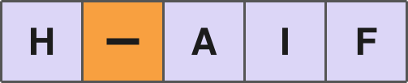

v0.20.0The API reference lists every public name of the library, grouped by what a user does with it: declaring a model, composing and running systems, inference, planning and objectives, learning, and records.
Loading replay data…
| Component | Kind | entries | nats | Size (log scale) | Status |
|---|
uv venv && uv pip install -e ".[dev]"
.venv/bin/python -m pytest # full test suite, about 12 minutessystem = System(
A_deps=((0,), (1,)), # cell_obs reads visit, gauge reads energy
B_deps=((0, 1, 3), (1, 3), (0,), ()), # the option moves visit and energy
controls=(3,),
action_names=("option",),
state_names=("visit", "energy", "map"),
control_names=("u_option",),
modality_names=("cell_obs", "gauge"),
policy_len=4, # four options ahead: 625 sequences
planner="enumeration",
mixture_k=1,
mixture_schedule="mode_aligned",
planning_belief="prior",
epistemic=("transition:map",), # the novelty of the map's table
terms=(),
readings=(("map", "u_option"),), # pooled readings, one count per option level
)
params = SystemParams(
parameters={
"field": ConditionalDirichlet.from_table(uniform, 1, strength=field_strength),
"energy_table": ConditionalDirichlet(concentration=energy_prior(), parent_ndims=2),
},
transition={
"visit": ...,
"energy": Parameter("energy_table"), # learned from the band readings
"map": Parameter("field"), # the shared table
},
readings={"map": READINGS}, # 11 for each survey sector, 6 for charge
terminal_targets={"energy": Categorical(logits=terminal_logits(penalty))}, # the plan's end
...
)agent = merge(
{"mission": ms, "rover": rs},
{"mission": mp, "rover": rp},
[
Identify("mission.option", "rover.u_opt"),
Identify("rover.field", "mission.field"),
Link("rover.x", "mission.cell_obs", realise="mode", kernel=grid),
],
)import jax.numpy as jnp
import numpy as np
import survey_model as sm
import survey_scheduler as ss
from hybrid_aif.objectives import total
grid, centres = sm.field_grid() # the rover's 16 x 16 grid and its cell centres
scheduler, params = ss.scheduler(grid, centres, readings=True) # pooled: 11 per survey, 6 charge
faces = scheduler.compiled()
reading = {"cell_obs": jnp.asarray(35), "gauge": jnp.asarray(7)} # in cell 35, band "full"
beliefs, _ = faces.infer_states(params, reading)
q_pi, tree = faces.infer_policies(params, beliefs) # enumerates the 4-step option sequences
G = total(tree).lower # signed sum of the terms, per sequence
novelty = tree["infogain"]["transition:map"].lower # nats about the field, pooled
risk = tree["terminal_risk"]["energy"].lower # the energy at the plan's end, nats
first = np.asarray(scheduler.policies(params))[:, 0, 0] # each sequence's first option
for k, name in enumerate(ss.OPTION_NAMES):
# the best sequence that starts with option k
i = min(np.flatnonzero(first == k), key=lambda i: float(G[i]))
print(f"{name:16s} novelty {float(novelty[i]):6.2f} risk {float(risk[i]):5.2f} G {float(G[i]):7.2f}")
# survey sector 1 novelty 43.94 risk 0.96 G -42.99
# survey sector 2 novelty 43.94 risk 0.96 G -42.99
# survey sector 3 novelty 43.94 risk 0.96 G -42.99
# survey sector 4 novelty 43.94 risk 0.96 G -42.99
# charge novelty 38.95 risk 1.10 G -37.85@software{hybrid_aif_2026,
title = {hybrid-aif: hybrid continuous-discrete active inference in {JAX}},
author = {Kiefer, Alex and Fox, Jason and {Noumenal Labs}},
year = {2026},
version = {0.20.0},
url = {https://github.com/noumenal-labs/hybrid-aif},
license = {MIT}
}